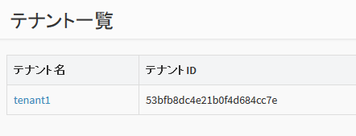
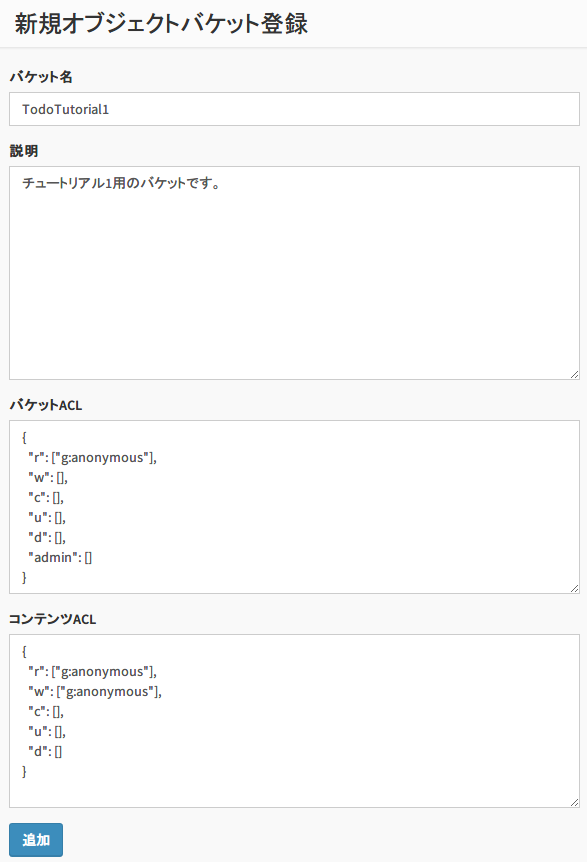

6. チュートリアル4 : TODOアプリ(オフライン機能あり)¶
このチュートリアルでは、オフライン機能に対応したToDoアプリを作成します。
{kind=link}
- Todo 項目を入力して追加したり、削除することができます。
- オフライン状態でTodoの追加・削除ができます。
- データは端末内のローカルデータベースに暗号化して保存されます。
- Sync ボタンを押すと、サーバのオブジェクトストレージと同期が実行されます。
- 本アプリは Android 端末上で動作するネイティブアプリで、Java で作成します。
なお、本チュートリアルでは、簡単のためユーザ認証やアクセス制御は一切 行いません。ユーザ認証を行うチュートリアルは、チュートリアル2を参照してください。
6.1. 新規アプリケーションを作成¶
まず、BaaS サーバのデベロッパコンソールにログインし、新規アプリケーションを作成します。
ブラウザを開き、デベロッパコンソールにアクセスし、 ID とパスワードを入力してログインしてください。

ログインが完了すると、テナント名の一覧が表示されます。ここに表示されている テナントID は後ほど使用しますので、メモしておいてください。
使用するテナントをクリックします。
「アプリケーション」をクリックし、「追加」ボタンを押して新規アプリケーションを作成します。
ここではアプリ名と説明文を上記のように入力します。
アプリの作成が完了すると、アプリの詳細情報が表示されます。 ここで表示される「アプリケーションID」「アプリケーションキー」は アプリケーションの認証に使用する秘密情報です。 この２つは後ほど使用しますので、メモしておいてください。
6.2. バケットの作成¶
Todo 情報を格納するための「バケット」を作成します。
画面左の「オブジェクトバケット」⇒「追加」をクリックして、バケットを追加します。 チュートリアル1と同じバケットを使用しますので、作成済みの場合は飛ばしてください。
バケット名は "TodoTutorial1" としてください。(4ではなく1です)
また、バケットのアクセス権限を変更し、誰でも(anonymousユーザ)バケットを読み書きできるようにします。 (デフォルトでは、認証ユーザしかバケットを読み書きできないようになっています）
「バケットACL」の r の行が "g:authenticated" となっていますので、 これを "g:anonymous" に変更してください。
また、「コンテンツACL」の r と w の行が "g:authenticated" となっていますので、 こちらも "g:anonymous" に変更してください。
6.3. サンプルコードの変更¶
チュートリアル4のサンプルコードを設定し、実際に動作させてみます。
チュートリアルの tutorial4/src/main/java/com/nec/android/baas/tutorial4 ディレクトリにある Consts.java ファイルを 以下のように変更します。
public abstract class Consts {
/**
* テナントID
*/
public static final String TENANT_ID = "53c379dc4b54a455b6777730";
/**
* アプリケーションID
*/
public static final String APP_ID = "53c379fa4b54a455b6777734";
/**
* アプリケーションキー
*/
public static final String APP_KEY = "ZmoFlxp3Klr11GZbyV11UsroMsAgMWyxncEHKuLJ";
/**
* エンドポイントURI
*/
public static final String ENDPOINT_URI = "https://api.example.com/api/";
/**
* データベース暗号化用パスワード
*/
public static final String ENCRYPT_KEY = "1234567890";
}
- TENANT_ID には テナントIDを設定してください。
- APP_ID にアプリケーションIDを設定してください。
- APP_KEY にアプリケーションキーを設定してください。
- ENDPOINT_URI には、NEC BaaS API サーバの URL を指定してください。パスの /api/ まで必要なので注意してください。
- ENCRYPT_KEY には、データベースを暗号化するためのパスワードを設定してください。
6.4. サンプルの実行¶
Android Studio に tutorial4 ディレクトリをプロジェクトとしてインポートし、 ビルド・実行してください。
Todo の操作は、チュートリアル1と同じです。
ここでは、チュートリアル1と4のアプリを使用して、オフライン動作について説明します。 チュートリアル1のアプリがない場合は事前に作成してください。 なお、端末は1台でも確認できますが、2台用意できる場合は片方にチュートリアル1のアプリ、 もう片方にチュートリアル4のアプリをインストールしてください。
まず、チュートリアル4のアプリを起動し、Todo一覧を表示します。
この時点ではまだローカルにデータが何もないため、何も表示されません。 「SYNC」を押してサーバと同期してください。サーバ側の Todo データがダウンロードされ 表示されます。
「ADD」を押下してTodoを追加します。 ここではまだ「SYNC」は押さないでください。
次に、チュートリアル1を表示します。 チュートリアル4はまだサーバと同期していないため、チュートリアル4で追加したTodoは表示されていません。 (左がチュートリアル4で右がチュートリアル1)
{kind=link}
チュートリアル1で新しく Todo を追加してください。サーバに Todo が追加されます。
次に、チュートリアル4を表示します。 最初に入力したTodoは表示されますが、チュートリアル1が入力したデータはまだ同期していないため表示されていません。
ここで「SYNC」を押して、サーバと同期を行ってください。 チュートリアル1で入力した Todo データがダウンロードされ表示されます。 また、チュートリアル4で入力した Todo データはサーバにアップロードされます。
次に、チュートリアル1を表示します。 チュートリアル4がサーバと同期したので、チュートリアル4で入力したデータが表示されます。
{kind=link}
ここでは、Todoの追加に関する同期を行いましたが、削除も同様にオフライン処理/同期が できますので試してみてください。
6.5. 注意事項¶
Android エミュレータを使用する場合、プロキシを使用しないようにしてください。 具体的には、環境変数 http_proxy を設定しないようにしてください。 エミュレータでプロキシを使用するようになっていると、HTTPS 接続が失敗することがあります。